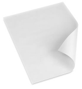
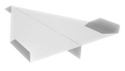
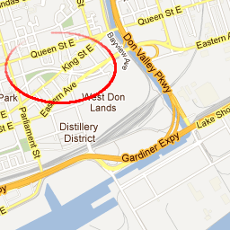
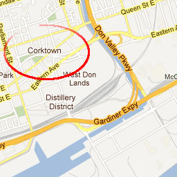

Lightweight Maps for Mobile
Part 1: Introduction to Map APIs and Libraries
by Jim Ing
When it comes to building interactive maps for desktop web, most of us are quite comfortable using APIs like Google Maps or Bing Maps. But when we need to port or build something for mobile, it often feels like we're crumpling a clean sheet of paper into a paper ball. Certainly, dealing with a smaller screen size, slower processor, and less memory can feel like a frustrating step backwards. But if you consider that mobile devices have touch screens, cameras, microphones, accelerometers, wireless and GPS capabilities on top of being portable, mobile devices are in a way better place than desktop PCs. So if we take the time to understand their limitations and features, we can build lightweight applications that are more like origami — compact, elegant, and functional — instead of like a crumpled paper ball that you're ready to throw in the trash can.
| Desktop web development is like this... | Mobile web can feel like this... | But mobile should and can be like this... |
|---|---|---|
|  |  | fairly standard | frustrating | compact, elegant, and functional |
So where do we start? Well, when it comes to mobile web apps, file and transfer size matters — the smaller, the better. So the first thing I wanted to do was survey the landscape and compare the size of some of the different APIs that are available. (If I missed some that are lightweight, please let me know.) Although Google Maps is the most popular API out there (and deservedly so), it's JavaScript API and tile images are quite large. In my tests below, I created basic map pages for a 1024×768 screen using each of the APIs, and I found that Google Maps transfers about 950 KB of data! This can be a problem for smartphones since they have limited memory. Besides causing an application to crash, a memory-intensive app can also chew up precious kilobytes from a user's data plan, and it can drain their battery faster than they want. Thankfully, we have some choices...
| API Provider | Test Page | Requests | Transferred (KB) |
Images (KB) |
Scripts (KB) |
|---|---|---|---|---|---|
| Bing 6.3 | 43 | 596.07 | 358.06 (35) | 228.92 (4) | |
| Bing 6.3c (Core) | 43 | 423.53 | 371.28 (34) | 46.72 (5) | |
| Bing 7.0 | 40 | 431.45 | 339.49 (30) | 86.67 (6) | |
| Google v3 | 66 | 949.65 | 842.93 (54) | 105.88 (12) | |
| Leaflet 0.3.1 (Cloudmade) | 30 | 603.23 | 513.56 (26) | 81.52 (1) | |
| MapQuest 7.0 | 60 | 900.30 | 851.82 (53) | 46.81 (4) | |
| Modest Maps 1.0.0 beta (MapBox) | 38 | 901.48 | 859.96 (35) | 39.62 (1) | |
| Nokia Ovi | 48 | 523.87 | 372.47 (36) | 150.16 (10) | |
| OpenLayers 2.11 Mobile | 52 | 595.28 | 508.70 (48) | 83.35 (1) | |
|
Legend:
Best
Worst
* Note:
|
|||||
Bing
As we can see from the results, Microsoft's Bing Maps is a good alternative that has improved a lot since version 6.3. In version 6.3, Bing quietly introduced a "core" version for mobile that stripped out features like drawing lines and polygons. This reduced their JavaScript library from 230 KB to 47 KB! Unfortunately if you needed some of those features, you were out of luck. But in version 7.0, they cleaned up their API and reduced it to 87 KB (without stripping features). So when you combine that savings with Bing's smaller tile size, the Bing test map transferred 432 KB — that's less than half of Google Maps! So I could stop here and just tell you to use Bing instead, but (as you'll see) it's always good to look at other options....
Modest Maps
Especially if we look at the API with the smallest library, Modest Maps, is a new library that weighs in at only 40 KB! It was designed to be simple, extensible, and it even works in older browsers like IE7. However, it's tile size was the largest at 861 KB!
MapQuest
MapQuest is a provider that has been around for awhile. Their version 7.0 is the second smallest library at only 47 KB, but their tile size is the third largest at 852 KB.
Nokia Ovi
So if we're also looking for an API that has the smallest tile size, Bing looks like the best choice, but Nokia's Ovi tiles are also lightweight at 373 KB, but their JavaScript library is the largest at 151 KB! It's too bad we couldn't use Modest Map's compact library with Bing's lightweight tiles... or can we? Well, in a way we can...
OpenLayers
OpenLayers as the name suggests is a completely free and Open Source library that allows you to switch between different base layers like Google Maps, Virtual Earth (Bing), Yahoo, etc. From a business model, this approach makes a lot of sense because it means you're not tied to one mapping provider and you're not as restricted by licensing or forced-API changes. With this approach, you can switch providers without having to completely change your code.
However, OpenLayers supports other maps by creating their own API layer on top of the other mapping APIs. So to use OpenLayers with Google or Bing, you'd have to include their libraries as well! This approach is fine for desktop, but it doesn't make sense for mobile. Also, OpenLayers is not as well-documented as some of the others, and it's API can be harder to learn. But, if you're doing some serious GIS work, this is an API you'll want to consider.
Leaflet
Fortunately, a new lightweight library called Leaflet has been gaining popularity because it is a modern Open Source library that uses HTML5 and CSS3. It was designed from the ground up to work in modern and mobile browsers. Since CSS3 is hardware-accelerated on many mobile devices, visuals like zooming and fading will be much faster than JavaScript-based animations.
Also, Leaflet has an easy-to-use API. So just how easy is it to add a map? First, we include the CSS and JavaScript:
<link rel="stylesheet" href="leaflet.css">
<script type="text/javascript" src="leaflet.js"></script>
Then we create a new tile layer specifying the format of the tile URL with some options like maximum zoom level:
var tileUrl = "http://{s}.tile.cloudmade.com/BC9A493B41014CAABB98F0471D759707/997/256/{z}/{x}/{y}.png",
tileAttr = "Map data © 2011 OpenStreetMap contributors, Imagery © 2011 CloudMade",
tileLayer = new L.TileLayer(tileUrl, {
maxZoom: 18,
attribution: tileAttr
});
Then we create the map and add the tile layer to it:
var map = new L.Map("map", {
center: new L.LatLng(43.6425778753, -79.3870621920), // Toronto
zoom: 14
});
map.addLayer(tileLayer);
That's it! Like OpenLayers, Leaflet allows you to easily switch between tile providers, but it does this in a much cleaner way — all you have to do is change the tile URL. So you don't even need to include Google's API to use their tiles. Of course, if you do use another tile provider, make sure you include the proper attribution.
var tileUrl = "http://{s}.googleapis.com/vt?lyrs=m@174225136&src=apiv3&hl=en-US&x={x}&y={y}&z={z}&s=Galile&style=api%7Csmartmaps",
tileAttr = "Map data © 2012 Google",
tileLayer = new L.TileLayer(tileUrl, {
maxZoom: 22,
subdomains: ['mt0', 'mt1'],
attribution: tileAttr
});
So with this simple approach, you can change the base tile layer to almost any provider as long as they are using OpenStreetMap's "Slippy" tile naming convention, which is pretty much every provider, except for Bing because Microsoft uses a different "Quadkey" convention.
Tile Naming Conventions
Basically, Slippy uses a straight-forward naming convention that looks like this ("mustache-style" URL template):
http://{s}.tile.cloudmade.com/YOUR-API-KEY/997/256/{z}/{x}/{y}.png
where,
- {s} = subdomain
- {x} = x-coordinate
- {y} = y-coordinate
- {z} = zoom level
Here's an example of an actual tile (near the CN Tower):
http://b.tile.cloudmade.com/BC9A493B41014CAABB98F0471D759707/997/256/14/4578/5980.png
But if we compare Slippy to the Quadkey format, you'll notice it's different enough that we can't easily use it (at least not with Leaflet — we can with Modest Maps):
http://ecn.{s}.tiles.virtualearth.net/tiles/{style}{quadkey}?g=914&mkt=en-us&lbl=l1&stl=h&shading=hill&n=z http://ecn.t0.tiles.virtualearth.net/tiles/r03022313122210?g=914&mkt=en-us&lbl=l1&stl=h&shading=hill&n=z
because the Quadkey format works like this:
- At zoom level 1 (of the entire world), there are only 4 tiles (or quadrants) numbered from 0 to 3. At the next zoom level, each tile is sub-divided into "quads", and so on.
- So the length of the quadkey represents the number of zoom levels.
- The quadkey of any tile starts with the quadkey of its parent tile.
- The first letter (which is not really part of the quadkey) specifies the base map style (r = Road, a = Aerial (Satellite), h = Hybrid (Aerial + Labels)

Although it might be tempting to complain about Microsoft being different, from a database perspective, quadkeys makes indexing and storage really efficient.
Hybrid Approach
Hopefully, that gives you a better understanding of tile structures. Do you see the possibilities? This is AWESOME! This means we can easily interchange libraries and tiles to suit our needs. Essentially, we can build our own "hybrid" API or "mashup" from the best pieces available. So now we can have an API that uses Bing's tiles, but is even lighter than Bing itself (which was already light to begin with at 432 KB)!
Here are some other combinations that are under 450 KB that you may want to consider:
Since we were able to make Bing lighter, I was curious to see if we could do the same with Google, and the result really surprised me! As you may recall, Google Maps transferred 950 KB, but when I combined Leaflet with Google's tiles, it only transferred 498 KB! That's half the size, which is great! But why such a difference?! Well, if we look at the number of requests, it gives us a big clue — Google's API is loading twice the number of tiles!
At first, I thought it might be pre-fetching or "lazy loading" tiles for areas outside the bounding box in case a user pans or zooms. But when I inspected the extra tiles, I found it's actually loading another set of tiles for the same area, which I haven't been able to figure out why — the extra tiles don't seem to be displayed anywhere. It's still a map view tile, but it has slightly different labels. Notice the one on the right has "Corktown" and the other one doesn't?
| Tile Set 1 (displayed) | Tile Set 2 (not displayed) |
|---|---|
|
 http://mt0.googleapis.com/vt ?lyrs=m@174232040 &src=apiv3 &hl=en-US &x=4580 &y=5979 &z=14 &s=Galileo &style=api%7Csmartmaps |
 http://mt0.googleapis.com/vt ?lyrs=m@174000000 &src=apiv3 &hl=en-US &x=4580 &y=5979 &z=14 &s=Galileo &style=api%7Csmartmaps |
I'm sure there's a good reason for this, but I'd be curious if there's an option to disable that? Either way, the good news is Google's tiles are not as heavy as I first thought so we can use them with Modest Maps or Leaflet to build familiar-looking mapping applications that will be more lightweight especially for mobile.
Besides being able to switch between providers, this hybrid approach has other advantages:
- For packaged applications like BlackBerry® WebWorks™, you can locally include the required API files (JavaScript, CSS, and images) with your application so you don't need to fetch them from a remote server. This makes loading an app faster and reduces bandwidth charges.
- Another advantage of having local files is you don't have to worry as much about a provider forcing an API change that can break your customizations. Although, you can usually reference an older API, sometimes a provider will force an upgrade even if you try to reference an older version.
- In the case of Yahoo! Maps, which discontinued its map service in September 2011, a local version means your app can still work. For example, Leaflet provides a layer control so you can select from different base layers.
These advantages are important especially for enterprise or mission-critical applications that need to minimize risk and downtime. So in the next post, I'll cover some techniques for adding offline capabilities to your map. Hopefully, with this "best of breed" approach, you'll be ready to build a map-based app that will feel more like a paper airplane than a paper ball.
(click to throw the paper airplane)